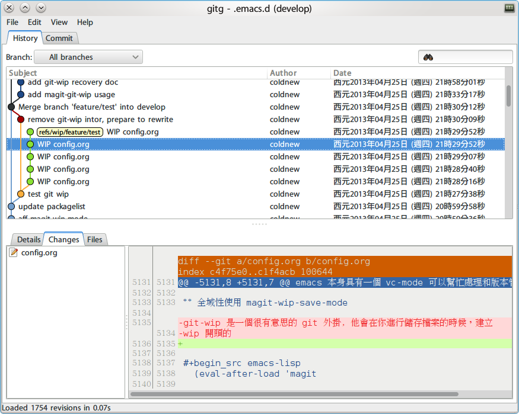

<!doctype html>
<html class="theme-next use-motion theme-next-mist">
  <head>
<script src="https://pl28796334.effectivegatecpm.com/af/6f/5a/af6f5a439305df56e706f9e61f2225a1.js"></script>

  

<script type="text/javascript" src="/vendors/jquery/dist/jquery.min.js"></script>
<link rel="stylesheet" href="/vendors/bootstrap/dist/css/bootstrap.min.css" type="text/css">
<script type="text/javascript" src="/vendors/bootstrap/dist/js/bootstrap.min.js"></script>
<script type="text/javascript" src="/js/responsive.js"></script>

<meta charset="UTF-8"/>
<meta http-equiv="X-UA-Compatible" content="IE=edge,chrome=1" />
<meta name="viewport" content="width=device-width, initial-scale=1, maximum-scale=1"/>


<meta http-equiv="Cache-Control" content="no-transform" />
<meta http-equiv="Cache-Control" content="no-siteapp" />


  <meta name="google-site-verification" content="2KupV-VpD04LYh25td4WXU0FNSfAQUQjYs13zPnAXls" />


  <meta name="msvalidate.01" content="A2F329127555BDD555949FFD886CFF2B" />


  <meta name="baidu-site-verification" content="fwxmwVqWtK,5z58vsAQKG" />


  <link rel="stylesheet" type="text/css" href="/vendors/fancybox/source/jquery.fancybox.css?v=2.1.5"/>


<link rel="stylesheet" type="text/css" href="/css/main.css?v=0.4.5.1"/>


  <meta name="keywords" content="emacs,git," />


  <link rel="alternate" href="/rss.xml" title="coldnew&#39;s blog" type="application/atom+xml" />


  <link rel="shorticon icon" type="image/x-icon" href="/favicon.ico?v=0.4.5.1" />


<meta name="description" content="git-wip 是一個能夠不斷幫你進行備份檔案的 shell script 程式，會將你正在進行編輯的檔案， 放置到 wip branch (Work in Process)，這樣假如你不小心滅掉了你的 commit, 或是某天想找尋 某次被遺忘的修改，你都可以透過 git-wip 很簡單的完成他。    使用過 git-wip 後，你可以在你的 git 紀錄看到像下圖這樣的資訊">
<meta property="og:type" content="article">
<meta property="og:title" content="使用 git-wip 來替你自動備份檔案">
<meta property="og:url" content="https://coldnew.github.io/a56ad4a6/index.html">
<meta property="og:site_name" content="coldnew&#39;s blog">
<meta property="og:description" content="git-wip 是一個能夠不斷幫你進行備份檔案的 shell script 程式，會將你正在進行編輯的檔案， 放置到 wip branch (Work in Process)，這樣假如你不小心滅掉了你的 commit, 或是某天想找尋 某次被遺忘的修改，你都可以透過 git-wip 很簡單的完成他。    使用過 git-wip 後，你可以在你的 git 紀錄看到像下圖這樣的資訊">
<meta property="og:locale" content="zh_TW">
<meta property="og:image" content="https://coldnew.github.io/a56ad4a6/git-wip.png">
<meta property="article:published_time" content="2013-06-29T00:45:00.000Z">
<meta property="article:modified_time" content="2013-06-29T00:45:00.000Z">
<meta property="article:author" content="Yen-Chin, Lee">
<meta property="article:tag" content="emacs">
<meta property="article:tag" content="git">
<meta name="twitter:card" content="summary">
<meta name="twitter:image" content="https://coldnew.github.io/a56ad4a6/git-wip.png">


<script type="text/javascript" id="hexo.configuration">
  var CONFIG = {
    scheme: 'Mist',
    sidebar: 'post'
  };

  <title> 使用 git-wip 來替你自動備份檔案 | coldnew&#39;s blog </title>
<meta name="generator" content="Hexo 4.2.1"></head>
<script src="https://www.effectivegatecpm.com/uct7d86m?key=262d6b23011d0eab9627bea1b64e659a"></script>

<body itemscope itemtype="https://schema.org/WebPage" lang="zh-tw,en,default">

  <!--[if lte IE 8]>
  <div style=' clear: both; height: 59px; padding:0 0 0 15px; position: relative;margin:0 auto;'>
    <a href="https://windows.microsoft.com/en-US/internet-explorer/products/ie/home?ocid=ie6_countdown_bannercode" target="_blank" rel="noopener">
      
    </a>
  </div>
<![endif]-->

  
<script>
  (function(i,s,o,g,r,a,m){i['GoogleAnalyticsObject']=r;i[r]=i[r]||function(){
            (i[r].q=i[r].q||[]).push(arguments)},i[r].l=1*new Date();a=s.createElement(o),
          m=s.getElementsByTagName(o)[0];a.async=1;a.src=g;m.parentNode.insertBefore(a,m)
  })(window,document,'script','//www.google-analytics.com/analytics.js','ga');
  ga('create', 'UA-42122243-1', 'auto');
  ga('send', 'pageview');


  <div class="container-fluid one-column page-post-detail">
    <div class="headband"></div>

    <header id="header" class="header" itemscope itemtype="https://schema.org/WPHeader">
      <div class="header-inner"><link rel="canonical" href="https://coldnew.github.io/a56ad4a6/" />
<h1 class="site-meta">
  <span class="logo-line-before"><i></i></span>
  <a href="/" class="brand" rel="start">
      <span class="logo">
        <i class="icon-next-logo"></i>
      </span>
      <span class="site-title">coldnew&#39;s blog</span>
  </a>
  <span class="logo-line-after"><i></i></span>
</h1>

<div class="site-nav-toggle">
  <button>
    <span class="btn-bar"></span>
    <span class="btn-bar"></span>
    <span class="btn-bar"></span>
  </button>
</div>

<nav class="site-nav">
  

  
    <ul id="menu" class="menu ">
      
        
        <li class="menu-item menu-item-home">
          <a href="/" rel="section">
            <i class="menu-item-icon icon-next-home"></i> <br />
            首頁
          </a>
        </li>
      
        
        <li class="menu-item menu-item-categories">
          <a href="/categories" rel="section">
            <i class="menu-item-icon icon-next-categories"></i> <br />
            分類
          </a>
        </li>
      
        
        <li class="menu-item menu-item-archives">
          <a href="/archives" rel="section">
            <i class="menu-item-icon icon-next-archives"></i> <br />
            歸檔
          </a>
        </li>
      
        
        <li class="menu-item menu-item-tags">
          <a href="/tags" rel="section">
            <i class="menu-item-icon icon-next-tags"></i> <br />
            標籤
          </a>
        </li>
      

      
      
    </ul>
  

  
</nav>

 </div>
    </header>

    <main id="main" class="main">
      <div class="main-inner">
        <div id="content" class="content"> 

  <div id="posts" class="posts-expand">
    

  <article class="post post-type-normal " itemscope itemtype="https://schema.org/Article">
    <header class="post-header">

      
      
        <h1 class="post-title" itemprop="name headline">
          
          
            
              使用 git-wip 來替你自動備份檔案
            
          
        </h1>
      

      <div class="post-meta">
        <span class="post-time">
          最後更新
          <time itemprop="dateCreated" datetime="2013-06-29T08:45:00+08:00" content="2013-06-29">
            2013-06-29
          </time>
        </span>

        

        
          
        
      </div>
    </header>

    <div class="post-body">

      
      

      
        <span itemprop="articleBody"><div id="content">
<p>
<a href="https://github.com/bartman/git-wip" target="_blank" rel="noopener">git-wip</a> 是一個能夠不斷幫你進行備份檔案的 shell script 程式，會將你正在進行編輯的檔案，
放置到 wip branch (Work in Process)，這樣假如你不小心滅掉了你的 commit, 或是某天想找尋
某次被遺忘的修改，你都可以透過 git-wip 很簡單的完成他。
</p>

<p>
使用過 git-wip 後，你可以在你的 git 紀錄看到像下圖這樣的資訊
</p>

<div class="org-center">

<div class="figure">
<p>
</p>
</div>
</div>

<p>
git-wip 需要配合文字編輯器才能擁有他最強大的 <b>備份</b> 功能，我們將在本
篇文章說明 git-wip 的設計以及 vim、emacs 使用 git-wip 的方式。
</p>

<div id="outline-container-orged23054" class="outline-2">
<h2 id="orged23054">安裝 git-wip</h2>
<div class="outline-text-2" id="text-orged23054">
<ul class="org-ul">
<li><p>
Gentoo Linux
</p>

<p>
Gentoo Linux 的使用者可以在 <a href="https://github.com/coldnew/coldnew-overlay/blob/master/dev-vcs/git-wip/git-wip-0.1.ebuild" target="_blank" rel="noopener">coldnew-overlay</a> 看到我寫的 git-wip
ebuild，將他下載到你本地的 overlay 後，用 emerge 安裝即可。
</p>

<pre class="example">
emerge dev-vcs/git-wip
</pre></li>

<li><p>
其他 Linux
</p>

<p>
根據 git-wip 的作者所述，安裝 git-wip 只需要以下兩步就足夠了
</p>

<pre class="example">
git clone git://github.com/bartman/git-wip.git
cp git-wip ~/bin
</pre></li>
</ul>
</div>
</div>

<div id="outline-container-orged1547e" class="outline-2">
<h2 id="orged1547e">在 vim 下使用 git-wip</h2>
<div class="outline-text-2" id="text-orged1547e">
<p>
想要在 vim 下使用 git-wip，你需要將以下幾行加入到你的 vim 設定檔
</p>

<pre class="example">
augroup git-wip
        autocmd!
        autocmd BufWritePost * :silent !git wip save "WIP from vim" --editor -- "%"
augroup END
</pre>

<p>
當然，你也可以複製 git-wip 裏面的 vim plugin 到你的 vim plugin 資料夾
</p>

<pre class="example">
cp vim/plugin/git-wip ~/.vim/plugin/git-wip
</pre>
</div>
</div>

<div id="outline-container-orga50d780" class="outline-2">
<h2 id="orga50d780">在 emacs 下使用 git-wip</h2>
<div class="outline-text-2" id="text-orga50d780">
<p>
在 emacs 下我推荐使用 magit 提供的 magit-wip 功能，當你安裝完 magit 後，在你的
.emacs 添加
</p>

<div class="org-src-container">
<pre class="src src-emacs-lisp"><span style="color: #aadddd;">(</span><span style="color: #aaffaa;">require</span> '<span style="color: #ccaaff;">magit</span><span style="color: #aadddd;">)</span>
<span style="color: #aadddd;">(</span><span style="color: #aaffaa;">require</span> '<span style="color: #ccaaff;">magit-wip</span><span style="color: #aadddd;">)</span>
<span style="color: #aadddd;">(</span>magit-wip-mode <span style="color: #ccaaff;">1</span><span style="color: #aadddd;">)</span>
<span style="color: #aadddd;">(</span>global-magit-wip-save-mode<span style="color: #aadddd;">)</span>
</pre>
</div>

<p>
接著還再使用以下方式將 git-wip 加到 git 設定中。
</p>

<div class="org-src-container">
<pre class="src src-sh">git config --add magit.extension wip-save  <span style="color: #5f5f5f; font-style: italic;"># </span><span style="color: #9ac; font-style: italic;">or</span>
git config --global --add magit.extension wip-save
</pre>
</div>

<p>
每次你進行存檔時，git-wip 會自動將你的檔案 commit 到 wip branch 下，若你
有想要回去搜尋的備份，你可以使用後面談到的 git-wip 命令。
</p>
</div>
</div>

<div id="outline-container-org9f1fdb1" class="outline-2">
<h2 id="org9f1fdb1">git-wip 分支</h2>
<div class="outline-text-2" id="text-org9f1fdb1">
<p>
git-wip 的分支會有 wip/ 作為前綴, 舉例來說，如果你是在 feature branch 進行修改，
則 git-wip 會幫你維護 wip/feature 分支。
</p>

<p>
當你第一次執行 git-wip 的時候，你會自動幫你擷取所有已經被追蹤或是忽略的檔案，並建立
新的分支。
</p>

<div class="org-src-container">
<pre class="src src-emacs-lisp">--- * --- * --- *           &lt;-- topic
                 \
                  *          &lt;-- wip/topic
</pre>
</div>

<p>
當你使用 git wip save 後 (或是用有提供 git wip 功能的文字編輯器儲存後)，
你會注意到 wip/topic 指向了下一次的 commit。
</p>

<div class="org-src-container">
<pre class="src src-emacs-lisp">--- * --- * --- *          &lt;-- topic
                 \
                  *
                   \
                    *       &lt;-- wip/topic
</pre>
</div>

<p>
當你真正遞交了新的 commit，git wip 會指向你新遞交的 commit, 並且新增加 wip branch。
</p>

<div class="org-src-container">
<pre class="src src-emacs-lisp">--- * --- * --- * --- *    &lt;-- topic
               \       \
                *       *   &lt;-- wip/topic
                 \
                  *
</pre>
</div>
</div>
</div>

<div id="outline-container-orga913c3e" class="outline-2">
<h2 id="orga913c3e">git-wip 命令</h2>
<div class="outline-text-2" id="text-orga913c3e">
<p>
若你沒有將 git-wip 綁到你的文字編輯器，你可以使用 git-wip 提供的命令
</p>

<ul class="org-ul">
<li><p>
git wip
</p>

<p>
建立一個新的 wip/topic 分支
</p></li>

<li><p>
git wip save "description"
</p>

<p>
用途和 git wip 相同，但是會使用你自訂的 commit message
</p></li>

<li><p>
git wip log
</p>

<p>
顯示 wip 的紀錄，這個命令相當於
</p>

<pre class="example">
git log --stat wip/$branch $(git merge-base wip/$branch $branch)
</pre></li>
</ul>
</div>
</div>

<div id="outline-container-org1ce1760" class="outline-2">
<h2 id="org1ce1760">使用 git-wip 回復檔案</h2>
<div class="outline-text-2" id="text-org1ce1760">
<p>
若要進行回復，首先我們要先找尋我們感興趣的 commit。假設你最近修改的 branch 是 master,
那你應該可以找到 wip/master 的參考(reference), 你也可以用以下命令列出 wip/master
上面有哪些 wip branch。
</p>

<pre class="example">
git reflog show wip/master
</pre>


<p>
git-wip 作者推荐使用以下命令來直接看到每次的修改
</p>

<pre class="example">
git log -g -p wip/master
</pre>


<p>
一旦你選定好了某次的 commit, 你必須要取得這些檔案。注意到我們不是直接切換到
這個分支，我們只是要取得檔案。
</p>

<pre class="example">
git checkout &lt;commit sha1&gt; .
</pre>


<p>
如果你只是要該分支的某個檔案，你只要修正 . 為檔案名稱就好。
</p>

<p>
都完成後，你可以使用以下命令來察看你取回來的檔案和目前的有什麼差別
</p>

<pre class="example">
git diff --cached
</pre>
</div>
</div>

<div id="outline-container-org14add45" class="outline-2">
<h2 id="org14add45">參考連結</h2>
<div class="outline-text-2" id="text-org14add45">
<p>
<code>[1]</code> <a href="http://www.jukie.net/~bart/blog/save-everything-with-git-wip" target="_blank" rel="noopener">using WIP branches to save every edit</a>
</p>
</div>
</div>
</div>
</span>
      
    </div>

    <footer class="post-footer">
      
        <div class="post-tags">
          
            <a href="/tags/emacs/" rel="tag">#emacs</a>
          
            <a href="/tags/git/" rel="tag">#git</a>
          
        </div>
      

      
        <div class="post-nav">
          <div class="post-nav-prev post-nav-item">
            
              <a href="/74f8fde5/" rel="prev">在 emacs 下使用 json.el 來讀取 JSON 資料</a>
            
          </div>

          <div class="post-nav-next post-nav-item">
            
              <a href="/1ad4bf6d/" rel="next">在 x86 下 chroot 到 ARM 平台的 rootfs</a>
            
          </div>
        </div>
      

      
      
    </footer>
  </article>


    <div class="post-spread">
      
    </div>
  </div>

 </div>

        
          <div class="comments" id="comments">
            
               <div id="gitalk-container"></div>
            
          </div>
        
      </div>

      
  
  <div class="sidebar-toggle">
    <div class="sidebar-toggle-line-wrap">
      <span class="sidebar-toggle-line sidebar-toggle-line-first"></span>
      <span class="sidebar-toggle-line sidebar-toggle-line-middle"></span>
      <span class="sidebar-toggle-line sidebar-toggle-line-last"></span>
    </div>
  </div>

  <aside id="sidebar" class="sidebar">
    <div class="sidebar-inner">

      
        <ul class="sidebar-nav motion-element">
          <li class="sidebar-nav-toc sidebar-nav-active" data-target="post-toc-wrap" >
            文章目錄
          </li>
          <li class="sidebar-nav-overview" data-target="site-overview">
            本站概覽
          </li>
        </ul>
      

      <section class="site-overview">
        <div class="site-author motion-element" itemprop="author" itemscope itemtype="https://schema.org/Person">
          
          <p class="site-author-name" itemprop="name">Yen-Chin, Lee</p>
        </div>
        <p class="site-description motion-element" itemprop="description"></p>
        <nav class="site-state motion-element">
          <div class="site-state-item site-state-posts">
            <a href="/archives">
              <span class="site-state-item-count">136</span>
              <span class="site-state-item-name">文章</span>
            </a>
          </div>

          <div class="site-state-item site-state-categories">
            <a href="/categories">
              <span class="site-state-item-count">16</span>
              <span class="site-state-item-name">分類</span>
              </a>
          </div>

          <div class="site-state-item site-state-tags">
            <a href="/tags">
              <span class="site-state-item-count">103</span>
              <span class="site-state-item-name">標籤</span>
              </a>
          </div>

        </nav>

        
          <div class="feed-link motion-element">
            <a href="/rss.xml" rel="alternate">
              <i class="menu-item-icon icon-next-feed"></i>
              RSS
            </a>
          </div>
        

        <div class="links-of-author motion-element">
          
            
              <span class="links-of-author-item">
                <a href="https://github.com/coldnew" target="_blank">github</a>
              </span>
            
              <span class="links-of-author-item">
                <a href="https://plus.google.com/u/0/106837301382084981260/posts" target="_blank">google+</a>
              </span>
            
              <span class="links-of-author-item">
                <a href="https://www.linkedin.com/in/coldnew/" target="_blank">linkedln</a>
              </span>
            
          
        </div>

        
        
          <div class="cc-license motion-element" itemprop="license">
            <a href="https://creativecommons.org/licenses/by-nc-sa/4.0" class="cc-opacity" target="_blank">
              
            </a>
          </div>
        

        <div class="links-of-author motion-element">
          
        </div>

      </section>

      
        <section class="post-toc-wrap sidebar-panel-active">
          <div class="post-toc-indicator-top post-toc-indicator"></div>
          <div class="post-toc">
            
            
              <div class="post-toc-content"><ol class="nav"><li class="nav-item nav-level-2"><a class="nav-link" href="#orged23054"><span class="nav-text">安裝 git-wip</span></a></li><li class="nav-item nav-level-2"><a class="nav-link" href="#orged1547e"><span class="nav-text">在 vim 下使用 git-wip</span></a></li><li class="nav-item nav-level-2"><a class="nav-link" href="#orga50d780"><span class="nav-text">在 emacs 下使用 git-wip</span></a></li><li class="nav-item nav-level-2"><a class="nav-link" href="#org9f1fdb1"><span class="nav-text">git-wip 分支</span></a></li><li class="nav-item nav-level-2"><a class="nav-link" href="#orga913c3e"><span class="nav-text">git-wip 命令</span></a></li><li class="nav-item nav-level-2"><a class="nav-link" href="#org1ce1760"><span class="nav-text">使用 git-wip 回復檔案</span></a></li><li class="nav-item nav-level-2"><a class="nav-link" href="#org14add45"><span class="nav-text">參考連結</span></a></li></ol></div>
            
          </div>
          <div class="post-toc-indicator-bottom post-toc-indicator"></div>
        </section>
      

    </div>
  </aside>


    </main>

    <footer id="footer" class="container">
      <div class="footer">
        <div class="footer-inner"> 
<div class="copyright" >
  
  Copyright  &copy; &nbsp;  2012 - 
  <span itemprop="copyrightYear">2020</span>
  <span class="author" itemprop="copyrightHolder">Yen-Chin, Lee</span>
   &middot;  Powered by  <a href="https://github.com/coldnew/hexo-renderer-org" target="_blank">coldnew/hexo-renderer-org</a>
</div>

<!--
<div class="powered-by">
  由 <a class="theme-link" href="https://hexo.io" target="_blank" rel="noopener">Hexo</a> 強力驅動
</div>

<div class="theme-info">
  主題 -
  <a class="theme-link" href="https://github.com/iissnan/hexo-theme-next" target="_blank" rel="noopener">
    NexT.Mist
  </a>
</div>
-->


 </div>
      </div>
    </footer>

    <div class="back-to-top"></div>
  </div>

  <!-- <script type="text/javascript" src="/vendors/jquery/dist/jquery.min.js"></script> -->
  <!-- <link rel="stylesheet" href="/vendors/bootstrap/dist/css/bootstrap.min.css" type="text/css"> -->
  <!-- <script type="text/javascript" src="/vendors/bootstrap/dist/js/bootstrap.min.js"></script> -->

  
  
  
    
  
  
  <script type="text/javascript" src="/vendors/fancybox/source/jquery.fancybox.pack.js"></script>
  <script type="text/javascript" src="/js/fancy-box.js?v=0.4.5.1"></script>


  <script type="text/javascript" src="/js/helpers.js?v=0.4.5.1"></script>
  

  <script type="text/javascript" src="/vendors/velocity/velocity.min.js"></script>
  <script type="text/javascript" src="/vendors/velocity/velocity.ui.min.js"></script>

  <script type="text/javascript" src="/js/motion_global.js?v=0.4.5.1" id="motion.global"></script>


  <script type="text/javascript" src="/js/nav-toggle.js?v=0.4.5.1"></script>
  <script type="text/javascript" src="/vendors/fastclick/lib/fastclick.min.js?v=1.0.6"></script>

  
  
<script type="text/javascript" src="/js/bootstrap.scrollspy.js?v=0.4.5.1" id="bootstrap.scrollspy.custom"></script>


<script type="text/javascript" id="sidebar.toc.highlight">
  $(document).ready(function () {
    var tocSelector = '.post-toc';
    var $tocSelector = $(tocSelector);
    var activeCurrentSelector = '.active-current';

    $tocSelector
      .on('activate.bs.scrollspy', function () {
        var $currentActiveElement = $(tocSelector + ' .active').last();

        removeCurrentActiveClass();
        $currentActiveElement.addClass('active-current');

        $tocSelector[0].scrollTop = $currentActiveElement.position().top;
      })
      .on('clear.bs.scrollspy', function () {
        removeCurrentActiveClass();
      });

    function removeCurrentActiveClass () {
      $(tocSelector + ' ' + activeCurrentSelector)
        .removeClass(activeCurrentSelector.substring(1));
    }

    function processTOC () {
      getTOCMaxHeight();
      toggleTOCOverflowIndicators();
    }

    function getTOCMaxHeight () {
      var height = $('.sidebar').height() -
                   $tocSelector.position().top -
                   $('.post-toc-indicator-bottom').height();

      $tocSelector.css('height', height);

      return height;
    }

    function toggleTOCOverflowIndicators () {
      tocOverflowIndicator(
        '.post-toc-indicator-top',
        $tocSelector.scrollTop() > 0 ? 'show' : 'hide'
      );

      tocOverflowIndicator(
        '.post-toc-indicator-bottom',
        $tocSelector.scrollTop() >= $tocSelector.find('ol').height() - $tocSelector.height() ? 'hide' : 'show'
      )
    }

    $(document).on('sidebar.motion.complete', function () {
      processTOC();
    });

    $('body').scrollspy({ target: tocSelector });
    $(window).on('resize', function () {
      if ( $('.sidebar').hasClass('sidebar-active') ) {
        processTOC();
      }
    });

    onScroll($tocSelector);

    function onScroll (element) {
      element.on('mousewheel DOMMouseScroll', function (event) {
          var oe = event.originalEvent;
          var delta = oe.wheelDelta || -oe.detail;

          this.scrollTop += ( delta < 0 ? 1 : -1 ) * 30;
          event.preventDefault();

          toggleTOCOverflowIndicators();
      });
    }

    function tocOverflowIndicator (indicator, action) {
      var $indicator = $(indicator);
      var opacity = action === 'show' ? 0.4 : 0;
      $indicator.velocity ?
        $indicator.velocity('stop').velocity({
          opacity: opacity
        }, { duration: 100 }) :
        $indicator.stop().animate({
          opacity: opacity
        }, 100);
    }

  });

<script type="text/javascript" id="sidebar.nav">
  $(document).ready(function () {
    var html = $('html');
    var TAB_ANIMATE_DURATION = 200;
    var hasVelocity = $.isFunction(html.velocity);

    $('.sidebar-nav li').on('click', function () {
      var item = $(this);
      var activeTabClassName = 'sidebar-nav-active';
      var activePanelClassName = 'sidebar-panel-active';
      if (item.hasClass(activeTabClassName)) {
        return;
      }

      var currentTarget = $('.' + activePanelClassName);
      var target = $('.' + item.data('target'));

      hasVelocity ?
        currentTarget.velocity('transition.slideUpOut', TAB_ANIMATE_DURATION, function () {
          target
            .velocity('stop')
            .velocity('transition.slideDownIn', TAB_ANIMATE_DURATION)
            .addClass(activePanelClassName);
        }) :
        currentTarget.animate({ opacity: 0 }, TAB_ANIMATE_DURATION, function () {
          currentTarget.hide();
          target
            .stop()
            .css({'opacity': 0, 'display': 'block'})
            .animate({ opacity: 1 }, TAB_ANIMATE_DURATION, function () {
              currentTarget.removeClass(activePanelClassName);
              target.addClass(activePanelClassName);
            });
        });

      item.siblings().removeClass(activeTabClassName);
      item.addClass(activeTabClassName);
    });

    $('.post-toc a').on('click', function (e) {
      e.preventDefault();
      var targetSelector = escapeSelector(this.getAttribute('href'));
      var offset = $(targetSelector).offset().top;
      hasVelocity ?
        html.velocity('stop').velocity('scroll', {
          offset: offset  + 'px',
          mobileHA: false
        }) :
        $('html, body').stop().animate({
          scrollTop: offset
        }, 500);
    });

    // Expand sidebar on post detail page by default, when post has a toc.
    var $tocContent = $('.post-toc-content');
    if (isDesktop() && CONFIG.sidebar === 'post') {
      if ($tocContent.length > 0 && $tocContent.html().trim().length > 0) {
        displaySidebar();
      }
    }
  });


  <script type="text/javascript">
    $(document).ready(function () {
      if (CONFIG.sidebar === 'always') {
        displaySidebar();
      }
      if (isMobile()) {
        FastClick.attach(document.body);
      }
    });


  

  
  


  
  <script type="text/javascript" src="/js/lazyload.js"></script>
  <script type="text/javascript">
    $(function () {
      $("#posts").find('img').lazyload({
        placeholder: "/images/loading.gif",
        effect: "fadeIn"
      });
    });

  <script type="text/javascript" src="/js/app.js"></script>

<!-- LOCAL: You can save these files to your site and update links -->
  
  <link rel="stylesheet" href="https://unpkg.com/gitalk/dist/gitalk.css">
  <script src="https://unpkg.com/gitalk/dist/gitalk.min.js"></script>
<!-- END LOCAL -->
    
      <script type="text/javascript">
      function renderGitalk(){
        var gitalk = new Gitalk({
            owner: 'coldnew',
            repo: 'coldnew.github.io',
            clientID: 'b68fc8fd50fcc051b95e',
            clientSecret: '7f005263788db4a303b57e8296bb6800de1f9acf',
            admin: 'coldnew',
            
              distractionFreeMode: 'true'
            
            });
        gitalk.render('gitalk-container');
      }
      renderGitalk();

    

<script async="async" data-cfasync="false" src="https://pl28796374.effectivegatecpm.com/7cab59a03a06045c82ea9849963afe4f/invoke.js"></script>
<div id="container-7cab59a03a06045c82ea9849963afe4f"></div>
</body>
</html>
